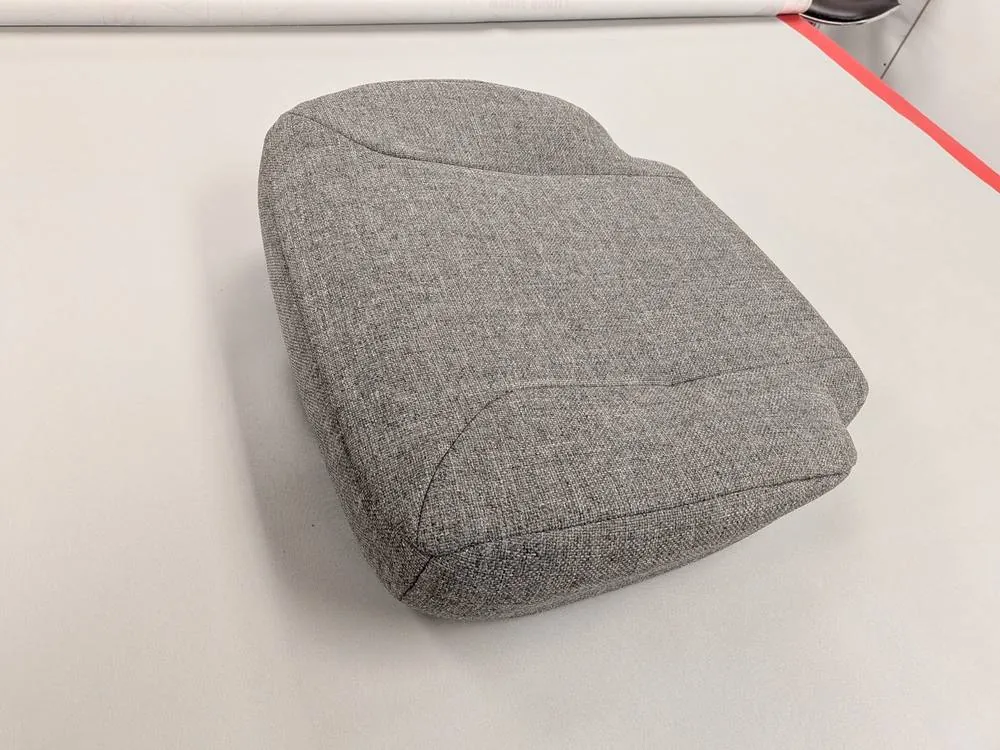
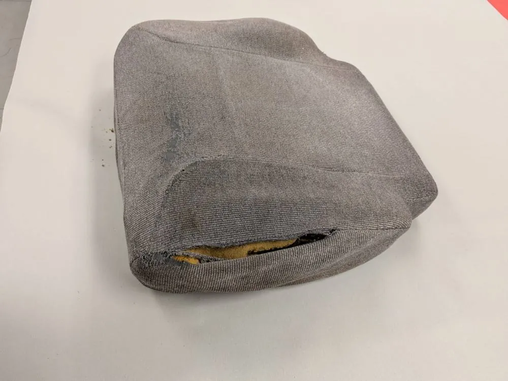
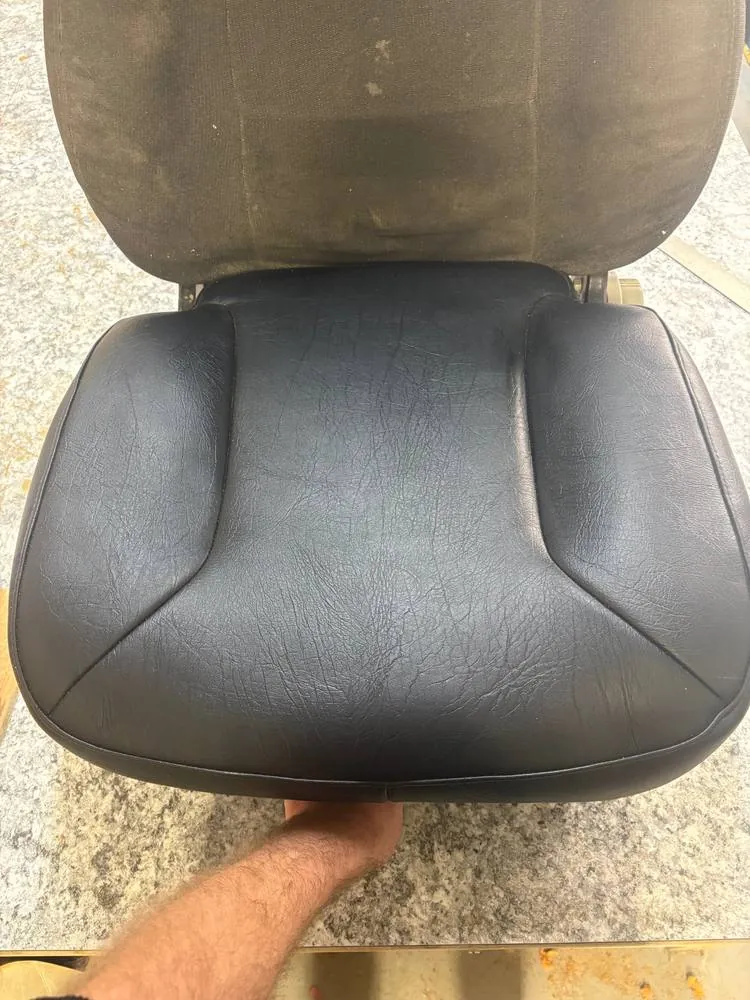
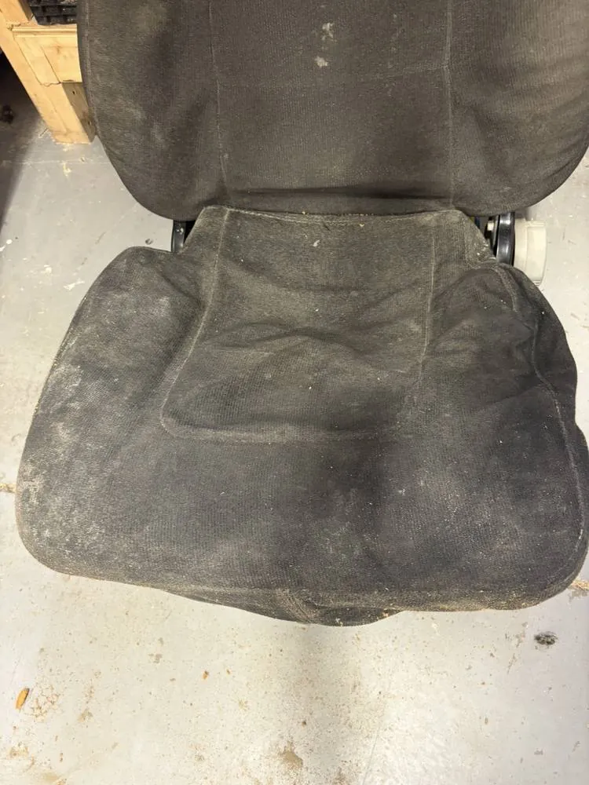

Trim-Pro / Auto upholstery
Truck seat repair & auto upholstery in Calgary
We repair or replace worn-out and broken pieces of your interior, depending on your needs and expectations. Material is typically in stock for most common vehicles.
What we repair
Seats, leather and vinyl
From replacing just a worn section of your seat to complete interiors, we have a variety of options to suit every budget.
Truck seat bolsters
The most common repair we see. Sliding in and out of the vehicle wears the bolster. We replace the worn material and rebuild the foam.
Leather and vinyl
Cracks and scratches in leather and vinyl seats can often be repaired. Email us pictures and we will tell you if it can be fixed. Planning a bigger upgrade? See our leather kits and heated seats.
Same-day service
We typically have material in stock for most common vehicles, and can often have your vehicle back the same day with an appointment.
Recent work
Before and after
Drag the handle to compare the old upholstery with the finished job.


BeforeAfter

BeforeAfterCommon questions
Questions we get asked
Can you repair a worn truck seat in Calgary?
Yes. Worn bolsters from sliding in and out of the truck are our most common repair. We replace the worn material and rebuild the foam.
Do you offer same-day seat repair?
We typically stock material for most common vehicles and can often return your vehicle the same day with an appointment.
Can you fix cracked or scratched leather and vinyl?
We repair cracks and scratches in vinyl and leather. Email photos and details to sales@trim-pro.ca and we will tell you whether it can be fixed.
More from Trim-Pro
Calgary, ABGet directions